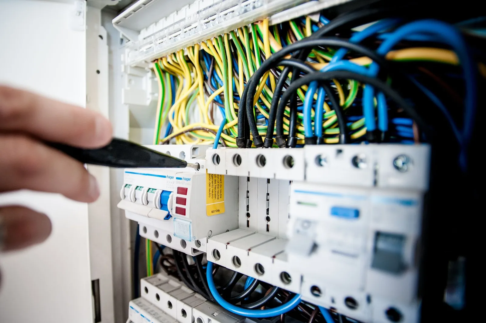
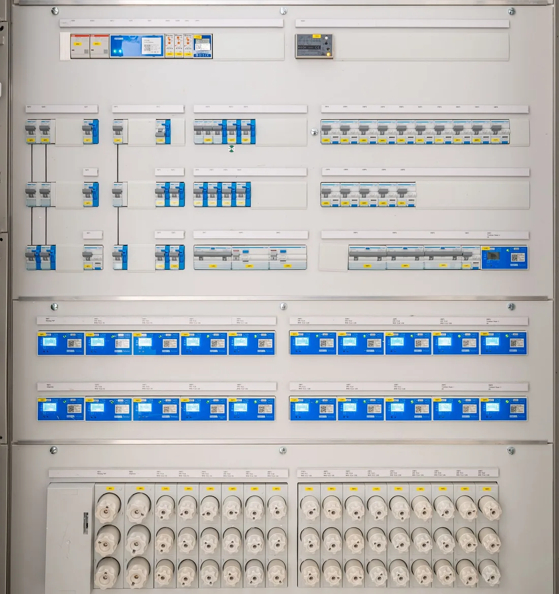
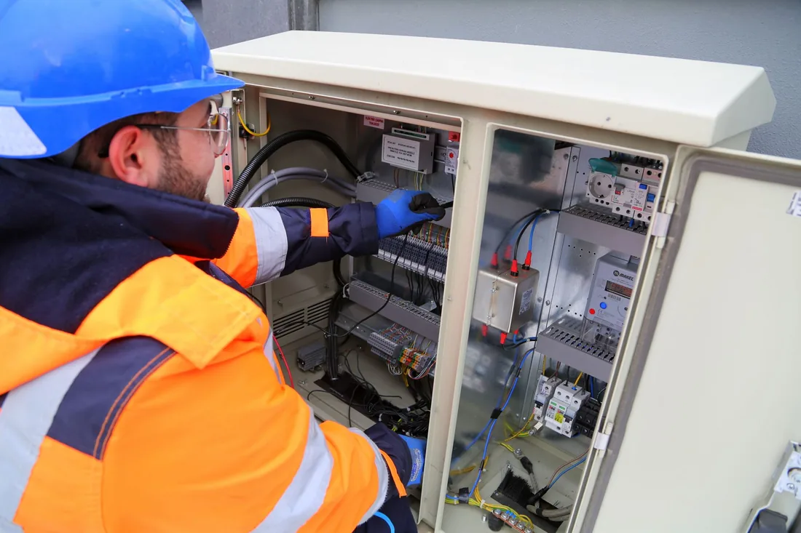
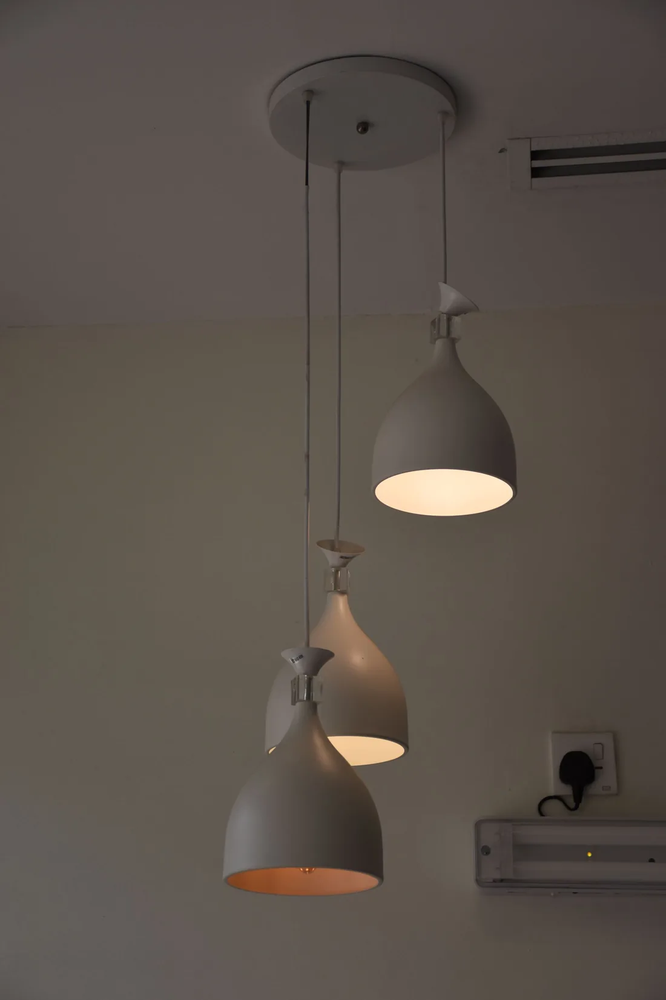
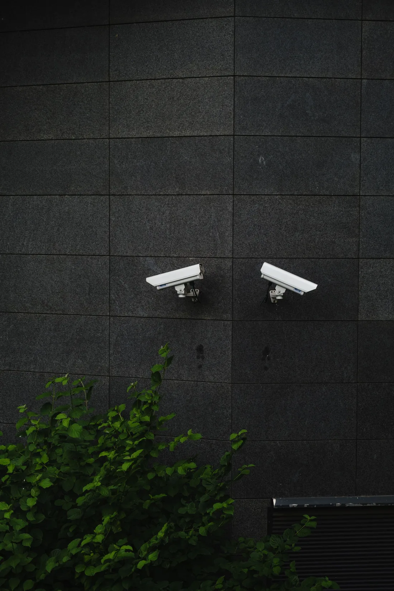
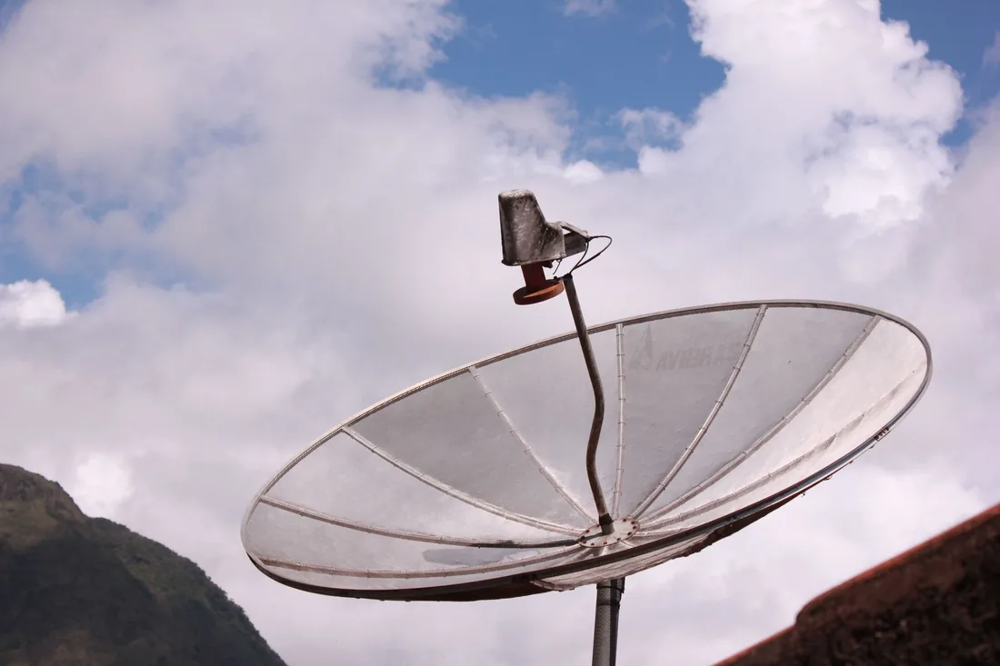
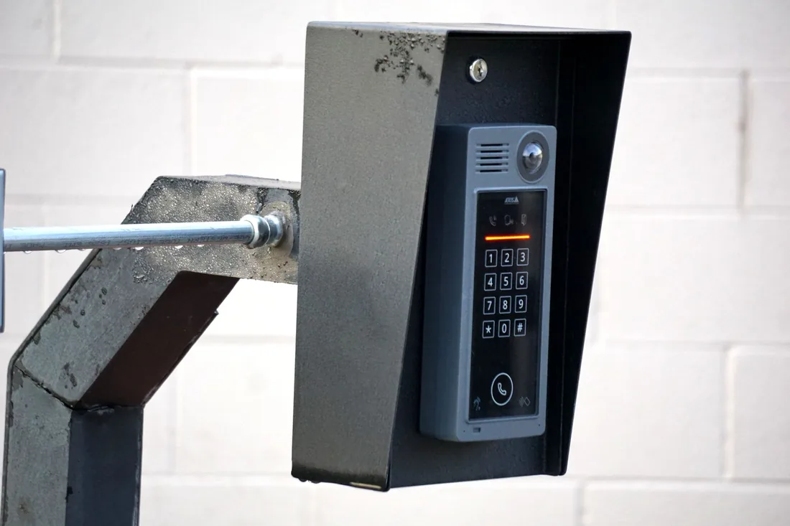
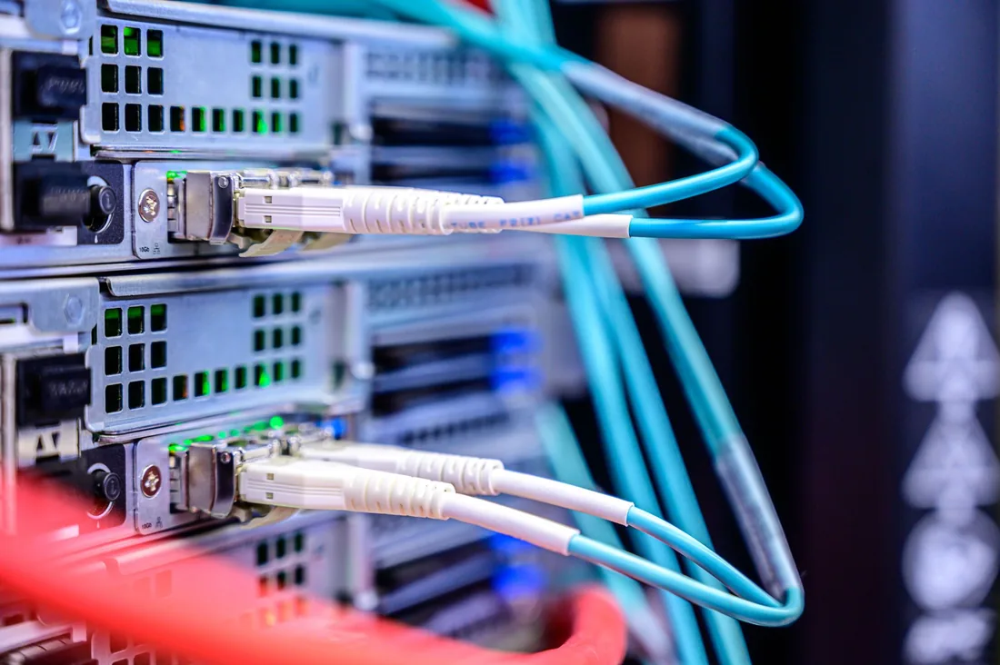

Elektrik Tesisatı
Konut ve iş yerleri için güvenli ve profesyonel elektrik tesisatı çözümleri.
Detayları keşfedin
ORSA ELEKTRİK / MALTEPE · ZÜMRÜTEVLER
Yaşam ve çalışma alanlarınız için elektrik,
güvenlik ve iletişim sistemleri.

01 / HAKKIMIZDA
Elektrik ve güvenlik sistemlerini, günlük yaşamın görünmeyen ama vazgeçilmez bir parçası olarak görüyoruz.
ORSA Elektrik olarak konut, apartman ve iş yerlerinin elektrik tesisatı, bakım, aydınlatma, kamera ve iletişim altyapısı ihtiyaçlarına çözüm sunuyoruz.
Maltepe Zümrütevler’deki adresimizden bize ulaşabilir; mevcut sisteminizi, ihtiyaçlarınızı ve uygulama seçeneklerini birlikte değerlendirebilirsiniz.
02 / HİZMETLERİMİZ
İlk kurulumdan bakım ve yenilemeye.
Birbiriyle uyumlu sistemler, doğru uygulamalar.
Konut ve iş yerleri için güvenli ve profesyonel elektrik tesisatı çözümleri.
Detayları keşfedin
02Elektrik arızalarının tespiti ve ihtiyaç duyulan onarım işlemleri.
Detayları keşfedinElektrik panosu kurulumu, düzenleme, bakım ve yenileme hizmetleri.
Detayları keşfedin
04İç ve dış mekânlar için modern ve verimli aydınlatma çözümleri.
Detayları keşfedin
05Ev, iş yeri, mağaza, ofis ve diğer alanlar için kamera ve güvenlik sistemi kurulumu.
Detayları keşfedin
06Uydu anten kurulumu, merkezi uydu sistemleri, sinyal ve arıza çözümleri.
Detayları keşfedin
07Apartman ve iş yerleri için görüntülü diafon kurulumu ve teknik destek.
Detayları keşfedin
08BİRLİKTE NASIL ÇALIŞIRIZ?
Konumunuzu, mevcut sistemi ve beklentilerinizi konuşuruz.
İşin kapsamı, malzeme ihtiyacı ve uygun zaman için plan yaparız.
Belirlenen kapsam doğrultusunda kurulum, bakım veya onarımı gerçekleştiririz.
03 / PROJELERİMİZ
Elektrik, aydınlatma ve güvenlik sistemlerine
yakından bakın.
“Örnek görsel” etiketli fotoğraflar temsilidir; ORSA Elektrik’in tamamlanmış projeleri olarak sunulmaz.
Elektrik Pano Sistemleri
Pano düzenleme ve teknik altyapı uygulamaları için örnek görsel.
Aydınlatma Sistemleri
İç mekân aydınlatma uygulamaları için örnek görsel.
Güvenlik Kamera Sistemleri
Kamera sistemi uygulamaları için örnek görsel.
GOOGLE İŞLETME PROFİLİ
İşletmemiz hakkındaki gerçek değerlendirmeleri Google üzerinden inceleyebilirsiniz.
04 / BİLGİ & REHBER
Eski tesisatın hangi belirtileri yenileme zamanının geldiğini gösterir?
Yazıyı okuyunÇözünürlük, gece görüşü ve kayıt kapasitesi seçimde öne çıkan kriterlerdir.
Yazıyı okuyunKaçak akım rölesinin sık atması ciddi bir uyarı işaretidir.
Yazıyı okuyun05 / İLETİŞİM
Maltepe Zümrütevler’de elektrik ve güvenlik ihtiyaçlarınız için bize ulaşın.
TEKLİF TALEBİ